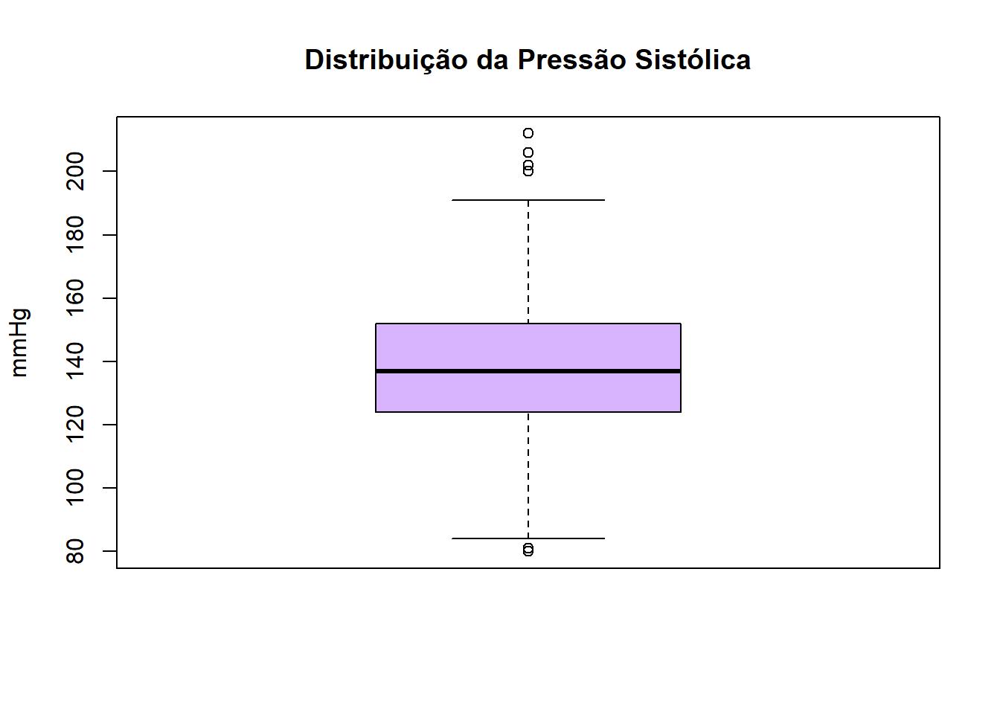
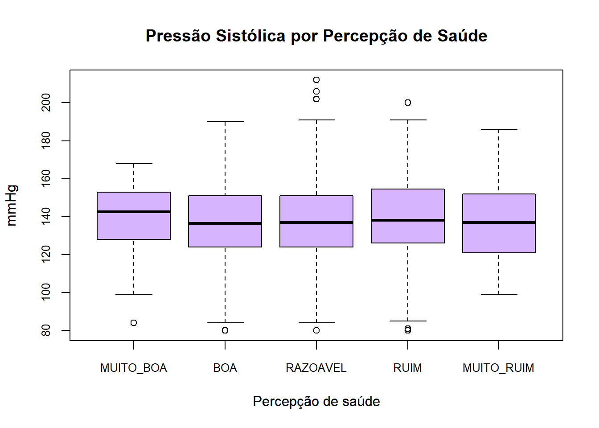
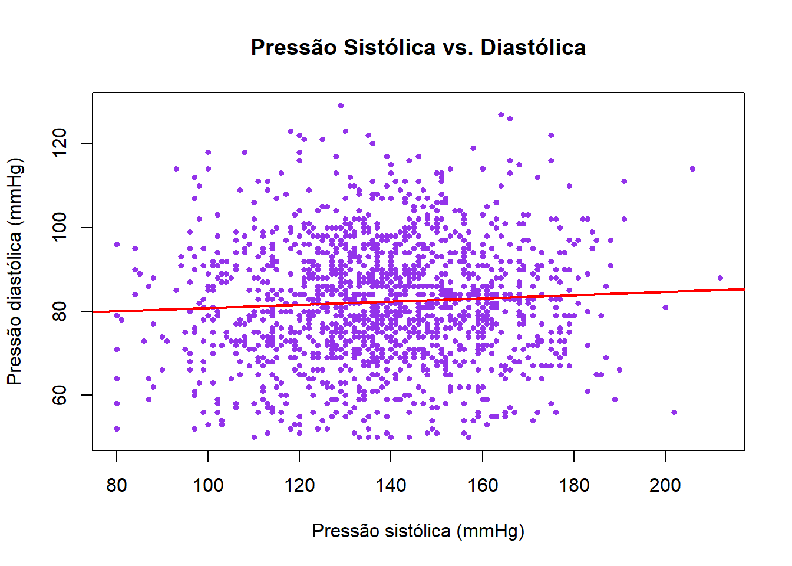
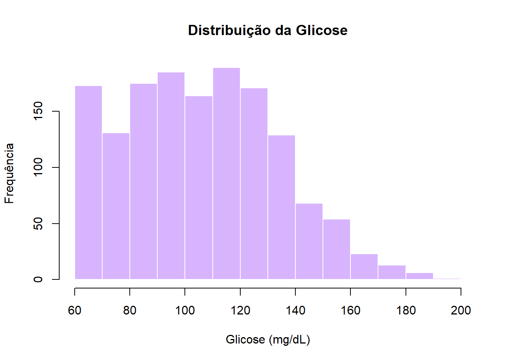
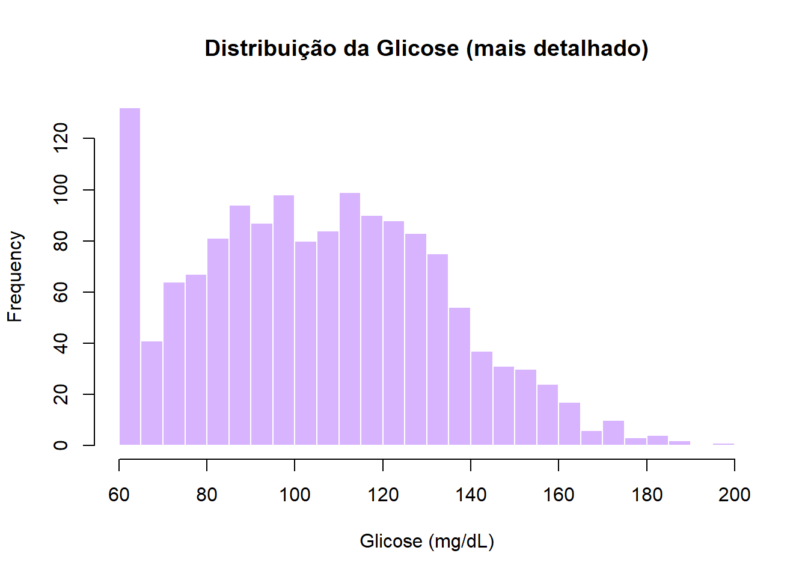
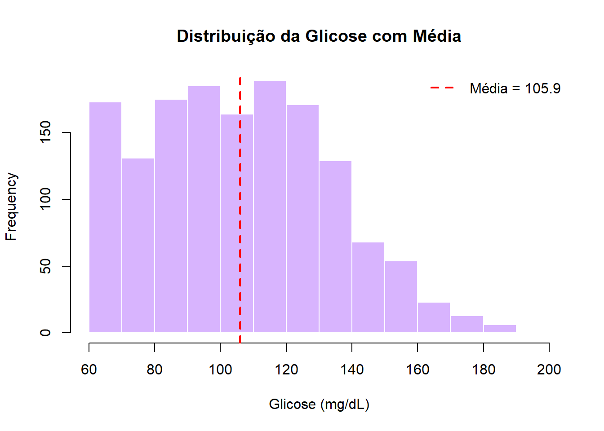
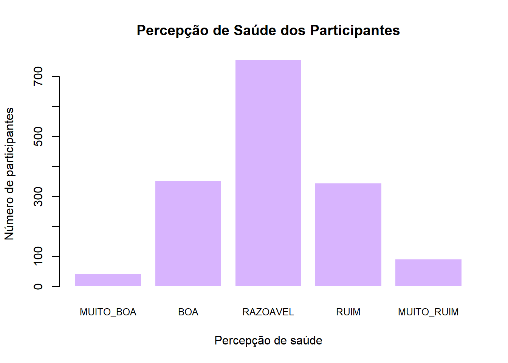
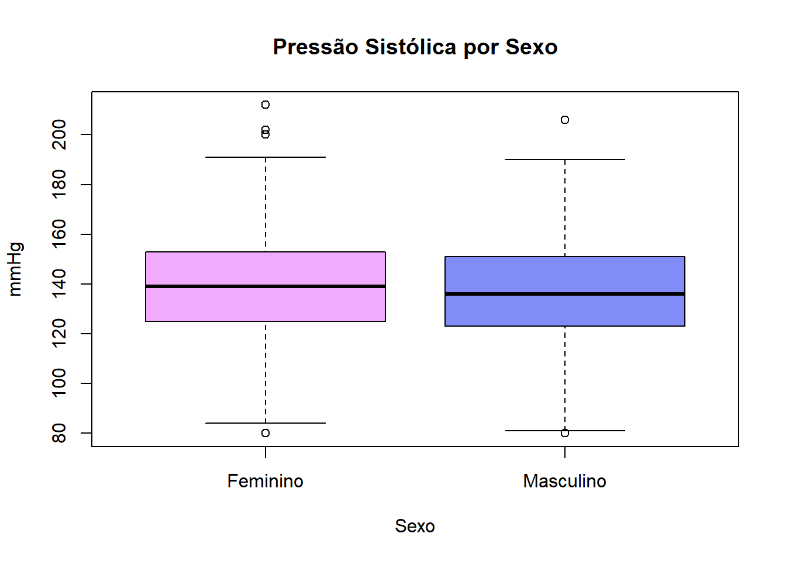

mean(dados$renda_reais, na.rm = TRUE)
#> [1] 318.8399Análise, interpretação e apresentação de dados
Ter os dados organizados é apenas o ponto de partida. O foco passa a ser a extração de informação: identificar padrões, avaliar comportamentos esperados ou atípicos e investigar possíveis relações entre variáveis. É nessa etapa que os resultados ganham interpretação e passam a subsidiar a tomada de decisão.
Neste módulo, vamos trabalhar sempre com a base unificada dados, construída unindo todas as tabelas do curso pelo id.
📐 Medidas de tendência central
Medidas de tendência central descrevem o valor típico de uma variável — onde os dados tendem a se concentrar.
Média
A média é a soma de todos os valores dividida pela quantidade de observações. É sensível a valores extremos.
Mediana
A mediana é o valor que divide os dados ao meio quando ordenados. É mais robusta a valores extremos do que a média.
median(dados$renda_reais, na.rm = TRUE)
#> [1] 272.94
Nota
Quando a média é muito maior que a mediana — como nos exemplos acima (R$ 317,75 vs R$ 272,05) —, isso indica que a distribuição é assimétrica à direita: poucos indivíduos com renda muito alta puxam a média para cima. Nesses casos, a mediana representa melhor o participante típico.
Moda
A moda é o valor que aparece com maior frequência. O R base não tem uma função pronta para isso, mas podemos calcular facilmente:
# função para calcular a moda
moda <- function(x) {
x <- x[!is.na(x)]
as.numeric(names(sort(table(x), decreasing = TRUE))[1])
}
moda(dados$n_residentes_domicilio)
#> [1] 2Resumo completo com summary()
A função summary() entrega as principais medidas de uma só vez:
summary(dados$glicose_mg_dl) Min. 1st Qu. Median Mean 3rd Qu. Max. NAs
60.0 84.0 105.0 105.9 126.0 196.0 109 📏 Medidas de dispersão
Dispersão indica o quanto os dados se afastam do valor central — ou seja, o quão variáveis eles são.
Variância e desvio padrão
O desvio padrão é a medida de dispersão mais usada. Quanto maior, mais os valores se afastam da média. Está na mesma unidade da variável original.
var(dados$pressao_sistolica, na.rm = TRUE) # variância
#> [1] 450.3195
sd(dados$pressao_sistolica, na.rm = TRUE) # desvio padrão
#> [1] 21.22073Amplitude e intervalo interquartil
# amplitude total (máximo - mínimo)
range(dados$pressao_sistolica, na.rm = TRUE)
#> [1] 80 212
# intervalo interquartil (Q3 - Q1): onde estão os 50% centrais
IQR(dados$pressao_sistolica, na.rm = TRUE)
#> [1] 28
# quartis: Q1 (25%), Q2 (50%) e Q3 (75%)
quantile(dados$pressao_sistolica, probs = c(0.25, 0.50, 0.75), na.rm = TRUE)
#> 25% 50% 75%
#> 124 137 152Coeficiente de variação
O coeficiente de variação (CV) expressa o desvio padrão como percentual da média, permitindo comparar a variabilidade de variáveis em escalas diferentes.
media <- mean(dados$renda_reais, na.rm = TRUE)
dp <- sd(dados$renda_reais, na.rm = TRUE)
cv <- (dp / media) * 100
round(cv, 1)
#> [1] 69.2| CV | Variabilidade |
|---|---|
| ≤ 10% | Baixa |
| 10–20% | Média |
| 20–30% | Alta |
| > 30% | Muito alta |
Visualizando dispersão com boxplot
O boxplot é uma forma gráfica de ver ao mesmo tempo a mediana, os quartis e os valores extremos.
boxplot(dados$pressao_sistolica,
main = "Distribuição da Pressão Sistólica",
ylab = "mmHg",
col = "#d8b4fe")
Também é possível comparar grupos lado a lado. Por exemplo, pressão sistólica por percepção de saúde:
dados$percepcao_saude <- factor(
toupper(dados$percepcao_saude),
levels = c("MUITO_BOA", "BOA", "RAZOAVEL", "RUIM", "MUITO_RUIM")
)
boxplot(pressao_sistolica ~ percepcao_saude,
data = dados,
main = "Pressão Sistólica por Percepção de Saúde",
xlab = "Percepção de saúde",
ylab = "mmHg",
col = "#d8b4fe",
cex.axis = 0.8)
🔗 Correlação
A correlação mede o grau de associação linear entre duas variáveis numéricas. O resultado é o coeficiente r, que varia de −1 a +1.
| Coeficiente r | Interpretação |
|---|---|
| r próximo de +1 | Associação positiva forte: quando uma variável aumenta, a outra também tende a aumentar. |
| r próximo de −1 | Associação negativa forte: quando uma variável aumenta, a outra tende a diminuir. |
| r próximo de 0 | Pouca ou nenhuma associação linear entre as variáveis. |
# correlação entre pressão sistólica e diastólica
cor(dados$pressao_sistolica, dados$pressao_diastolica, use = "complete.obs")
#> [1] 0.06Para visualizar a relação entre duas variáveis, usa-se o gráfico de dispersão com plot():
plot(dados$pressao_sistolica, dados$pressao_diastolica,
main = "Pressão Sistólica vs. Diastólica",
xlab = "Pressão sistólica (mmHg)",
ylab = "Pressão diastólica (mmHg)",
pch = 19,
col = "#9333ea",
cex = 0.6)
# adicionar linha de tendência
abline(lm(pressao_diastolica ~ pressao_sistolica, data = dados),
col = "red", lwd = 2)
Para correlacionar várias variáveis ao mesmo tempo, usa-se cor() com um data frame:
variaveis_lab <- dados[, c("glicose_mg_dl", "colesterol_total_mg_dl",
"hdl_mg_dl", "ldl_mg_dl", "triglicerideos_mg_dl")]
round(cor(variaveis_lab, use = "complete.obs"), 2)
#> glicose_mg_dl colesterol_total_mg_dl hdl_mg_dl ...
#> glicose_mg_dl 1.00 -0.00 0.01
#> colesterol_total_mg_dl -0.00 1.00 -0.01
#> hdl_mg_dl 0.01 -0.01 1.00
#> ...📊 Histograma
O histograma mostra a distribuição de frequências de uma variável numérica contínua, dividindo os valores em intervalos (classes) e exibindo quantas observações caem em cada um.
hist(dados$glicose_mg_dl,
main = "Distribuição da Glicose",
xlab = "Glicose (mg/dL)",
ylab = "Frequência",
col = "#d8b4fe",
border = "white")
O argumento breaks controla o número de intervalos:
# mais detalhado
hist(dados$glicose_mg_dl,
breaks = 30,
main = "Distribuição da Glicose (mais detalhado)",
xlab = "Glicose (mg/dL)",
col = "#d8b4fe",
border = "white")
Também é possível adicionar uma linha vertical para indicar a média:
hist(dados$glicose_mg_dl,
main = "Distribuição da Glicose com Média",
xlab = "Glicose (mg/dL)",
col = "#d8b4fe",
border = "white")
abline(v = mean(dados$glicose_mg_dl, na.rm = TRUE), col = "red", lwd = 2, lty = 2)
legend("topright",
legend = paste("Média =", round(mean(dados$glicose_mg_dl, na.rm = TRUE), 1)),
col = "red", lty = 2, lwd = 2, bty = "n")
📋 Tabela de frequência
Tabelas de frequência resumem a distribuição de variáveis categóricas.
Frequência absoluta e relativa
# frequência absoluta
table(dados$percepcao_saude)
MUITO_BOA BOA RAZOAVEL RUIM MUITO_RUIM
43 354 757 345 92 # frequência relativa (proporção)
prop.table(table(dados$percepcao_saude))
MUITO_BOA BOA RAZOAVEL RUIM MUITO_RUIM
0.02702703 0.22250157 0.47580138 0.21684475 0.05782527 # frequência relativa em percentual, arredondada
round(prop.table(table(dados$percepcao_saude)) * 100, 1)
MUITO_BOA BOA RAZOAVEL RUIM MUITO_RUIM
2.7 22.3 47.6 21.7 5.8 Tabela de contingência (duas variáveis)
# cruzamento entre percepção de saúde e diabetes
table(dados$percepcao_saude, dados$diabetes)
NAO SIM
MUITO_BOA 33 10
BOA 280 74
RAZOAVEL 610 147
RUIM 267 78
MUITO_RUIM 71 21Gráfico de barras a partir de uma tabela
freq <- table(dados$percepcao_saude)
barplot(freq,
main = "Percepção de Saúde dos Participantes",
xlab = "Percepção de saúde",
ylab = "Número de participantes",
col = "#d8b4fe",
border = "white",
cex.names = 0.8)
🧪 Introdução a testes estatísticos
Testes estatísticos permitem verificar se uma diferença ou associação observada nos dados é estatisticamente significativa — ou seja, se provavelmente não ocorreu por acaso.
O resultado principal é o p-valor: se p < 0,05, a diferença ou associação é considerada estatisticamente significativa (com 95% de confiança).
Teste Kolmogorov-Smirnov (KS)
O teste Kolmogorov-Smirnov é muito utilizado para verificar se uma variável segue distribuição normal, que é uma condição relevante para realizar o teste t.
ks.test(dados$idade, "pnorm", mean(dados$idade), sd(dados$idade))Warning in ks.test.default(dados$idade, "pnorm", mean(dados$idade),
sd(dados$idade)): não devem existir empates no teste de Kolmogorov-Smirnov de
apenas uma amostra
Asymptotic one-sample Kolmogorov-Smirnov test
data: dados$idade
D = 0.17665, p-value < 2.2e-16
alternative hypothesis: two-sidedTeste t
O teste t compara médias de dois grupos, verifica se há diferença significativa entre dois grupos.
Exemplo: A pressão sistólica difere entre homens e mulheres?
t.test(pressao_sistolica ~ sexo, data = dados)
Welch Two Sample t-test
data: pressao_sistolica by sexo
t = 1.5169, df = 1294.2, p-value = 0.1295
alternative hypothesis: true difference in means between group F and group M is not equal to 0
95 percent confidence interval:
-0.4995114 3.9055457
sample estimates:
mean in group F mean in group M
138.5943 136.8913
Nota
p-valor = 0,13 → não há diferença significativa entre homens e mulheres na pressão sistólica. A diferença observada (1,7 mmHg) pode ter ocorrido por acaso.
Antes de interpretar o teste t, convém verificar se as médias fazem sentido visualmente:
boxplot(pressao_sistolica ~ sexo,
data = dados,
main = "Pressão Sistólica por Sexo",
xlab = "Sexo",
ylab = "mmHg",
col = c("#f0abfc", "#818cf8"))
Teste qui-quadrado
O teste qui-quadrado (χ²) verifica se existe associação significativa entre duas variáveis categóricas.
Exemplo: Existe associação entre diabetes e artrite?
tabela <- table(dados$diabetes, dados$artrite)
tabela
NAO SIM
NAO 871 390
SIM 236 94chisq.test(tabela)
Pearson's Chi-squared test with Yates' continuity correction
data: tabela
X-squared = 0.62658, df = 1, p-value = 0.4286
Nota
p-valor = 0,43 → não há associação significativa entre diabetes e artrite nesta amostra.
Teste de correlação
O cor.test() verifica se a correlação entre duas variáveis é estatisticamente diferente de zero.
Exemplo: A correlação entre pressão sistólica e diastólica é significativa?
cor.test(dados$pressao_sistolica, dados$pressao_diastolica)
Pearson's product-moment correlation
data: dados$pressao_sistolica and dados$pressao_diastolica
t = 2.1896, df = 1480, p-value = 0.02871
alternative hypothesis: true correlation is not equal to 0
95 percent confidence interval:
0.005920359 0.107432341
sample estimates:
cor
0.05682321
Nota
p-valor = 0,03, então a correlação é estatisticamente significativa, mas o coeficiente r = 0,063 indica uma associação muito fraca na prática. Significância estatística não significa importância clínica — o tamanho da amostra grande (n > 1.300) torna o teste muito sensível a correlações pequenas.